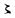

【入力者注の形式】
【入力者注の形式】

 ●一部の書籍では、新しい段落の始まりに括弧（「「」、「（」など）がくる際、１字または半字下げてある場合があります。（右の例では、１字下げてあります。）こうした場合にも、下のように、スペースは入れずに入力してください。
●一部の書籍では、新しい段落の始まりに括弧（「「」、「（」など）がくる際、１字または半字下げてある場合があります。（右の例では、１字下げてあります。）こうした場合にも、下のように、スペースは入れずに入力してください。
【字下げ】
●テキスト・ファイルでは、字下げは形どおりに再現できません。底本に字下げした組みがあるときは、入力者注で表します。
●字下げがはじまる１行前に、下の例のように［＃ここから○字下げ］と入れ、行をあらためて、底本の文章を入力してください。「○字下げ」の「○」の所は、全角のアラビア数字で入力してください。
すでに何字分下げるかは注記してあるのですから、あらためて字下げされた字数分、全角スペースを入れる必要はありません。
●字下げが終わったら、下のように改行して［＃ここで字下げ終わり］と入れてください。
●字下げ箇所の前後で行が開けてあれば、下のように、入力テキスト中にも、空白の行を入れてください。

【行の長さ】
●写真やイラストレーションの入った書籍では、その部分だけ行の長さが変えてあることがよくあります。上の字下げの場合と同様に、このようなレイアウトは再現できませんので、無視してください。ただし、写真やイラストレーションの著作権が切れていて、それらを入れた形で登録したいという場合には［＃写真入る］などの注記を入れてください。
【改行】
●底本（印刷物）は、それぞれ、固有の行の長さを基準にレイアウトが固定されています。入力の際には、「底本に合わせて、１行１行の行末に改行（リターン）を入れる」ことは絶対に避けてください。「改行は段落から段落への移り目だけに入れる」が原則です。
【表組】
●テキスト・ファイルで表組を正確に再現することはできません。簡単な表組の場合には、項目と項目との間でTABキーを押し、TABで区切って入力してください。また、複雑な表組の場合は、別途ご連絡ください。
（３）外国語
【アルファベット】
●JIS X 0208にある文字を使って進めていく青空文庫の入力では、ラテン文字、ギリシア文字、（ロシア語などの表記に使われる）
キリール文字の三種類のアルファベットが使えます。
●このうちラテン文字については、一般のパソコンでは、半角のものと全角のものを使い分けられます。
青空文庫の入力でも、半角、全角双方のラテン文字を使います。
●アルファベットの語句は、原則として、英文モードで半角のラテン文字を使い、
僕は Victor Hugo の Notre Dame を読んだとき、
のように入力してください。
●半角ラテン文字の語間は、上のように、半角開けてください。
●ギリシア文字、キリール文字は、和文モードの全角でしか入力できません。全角の文字を用いて、
そこには ΚΑΜΑΤΟΣ ΕΥΚΑΜΑΤΟΣ とあった。
のように入力してください。
●ギリシア文字、キリール文字の語間は、上のように、全角開けてください。
●かな、漢字、記号（句読点と括弧をのぞく）とアルファベットの境は、
外道哲学と Sokrates 前の希臘哲学
説話には一々 moral が附く。
そこには ΚΑΜΑΤΟΣ ΕΥΚΑΜΑΤΟΣ とあった。
のように、半角開けてください。
●アルファベット文字列に組み込まれた、ピリオドやコンマ、中点、コロン、セミコロン、疑問符、感嘆符などの各種記号は、アルファベットととして扱います。
半角のものがあれば、半角で入力し、かな、漢字、記号（句読点と括弧をのぞく）と接するときは、
Il nevivra pas ! と云った。
青空文庫の玄関口は http://aozora.gr.jp/ です。
のように、半角開けてください。
●句読点とアルファベットの境には、
西洋にいた時から、Archive とか
のように、アキを入れないでください。
●日本語が入る括弧とアルファベットの境には、
そこには ΚΑΜΑΤΟΣ ΕΥΚΑΜΑΤΟΣ（苦は苦にならぬ）とあった。
のように、アキを入れないでください。
●括弧の中にアルファベットが入る場合、アルファベットの前後には、
“Kosinski soll leben !”
バヴァリア（Bavaria, Bayern）は、
苦は苦にならぬ（ΚΑΜΑΤΟΣ ΕΥΚΑΜΑΤΟΣ）
のように、アキを入れないでください。
アルファベットの入る括弧には、全角のものを使ってください。括弧の前後には、アキを入れないでください。
●ＪＲやＮＡＳＡなどのように、縦書き表示されることの多い略語は、和文モードで、全角のアルファベットを用いて入力してください。
●縦組みの底本中で、縦に組まれているアルファベットは、和文モードで、全角のものを用いて入力してください。
●全角で入力した、アルファベットの略号、縦アルファベットが、かな、漢字、記号と接するところには、
ＡＴ＆Ｔ、ＮＴＴはともに、
ａ、ｂ、ｃと黒板に
のように、アキを入れないでください。
【アクセント符号付きのラテン文字】
●アクサン（´）（｀）や、ウムラウト（¨）などが付いたラテン文字には、異機種間の互換性がありません。アクセント符号なしのラテン文字を入力し、
フランスには raffine［＃eはアクサンテギュ（´）付き］ という語がある。
のように、どの字にどのアクセント符号が付いているのかを、入力者注で示してください。（→WIN版異機種間の互換性、→MAC版異機種間の互換性）
●アクセント符号に関する注記は、以下のように、単語の後に付けてください。
刻み附けた ecriture［＃１文字目のeはアクサンテギュ（´）付き］ runique であろう。
●ラテン文字の語と注記の括弧（［）のあいだには、上の例のように、アキを入れないでください。ラテン文字のうしろに入るアキは、注記の括弧（］）のあとに置いてください。
●アクセント符号の名称は、以下にならってください。
´ アクサンテギュ
｀ アクサングラーブ
＾ アクサンシルコンフレックス
¨ ウムラウト
（４）数字と記号
【数字】
●１文字のアラビア数字（算用数字）は全角で、２文字以上の場合は半角で（10キーを使って）入力してください。
●半角数字中の「,」は、半角で入力してください。
●底本の表記が「一九九八年」のような漢数字の場合は、そのまま漢数字で入力してください。
【記号】
●「（」、「）」、「「」、「」」などの括弧記号、「，」、「．」、「・」、「？」、「！」などの記述記号は、原則として、和文モードで入力してください。ただし、アルファベットとアラビア数字の、半角文字列中で用いられる場合には、英文モードで半角のものを入力してください。
●かな漢字変換ソフト（MSIME、ATOKなど）の設定によっては、句読点などが自動的に半角や「．」「，」に変換されてしまうことがあります。入力にとりかかる前に、設定を確認しておきましょう。
MSIME、ATOK共に、句読点の種類（「。、」か「．，」か）は、底本の句読点に合わせてください。ツールバーから、MSIMEは「プロパティ」を、ATOKは「メニュー」→「プロパティ」を選ぶと、設定画面になります。
MSIMEの設定画面
ATOKの設定画面

また、MSIMEの初期設定では、記号の半角／全角変換が「前回の変換に従う」となっていることがあります。「全角・半角」タブ（MSIME98以降は「オートコレクト」タブ）で、句読点、括弧の設定を「常に全角」にしておいてください。

【特殊記号】
●WindowsのMSIMEやATOK、MacintoshのことえりやATOKの文字パレット（→WIN版文字パレットを使う方法、→MAC版文字パレットを使う方法）にある「ローマ数字」などの特殊文字は異機種間の互換性がありませんので、使用しないでください。入力時には、普通の数字などへの置き換えが必要になります。（→WIN版異機種間の互換性、→MAC版異機種間の互換性）
【単位】
●「cm」や「mg」などの単位は英語の小文字として扱い、英文モードで入力してください。
●WindowsのMSIMEやATOK、MacintoshのことえりやATOKの文字パレットの「単位」の項目には全角１文字の単位記号が用意されています。これらは異機種間の互換性がありませんので、使用しないでください。（→WIN版異機種間の互換性、→MAC版異機種間の互換性）
【ハイフンとダッシュ】
●半角のアルファベット、数字文字列中で使われているハイフンには、半角の「-」を使ってください。
●ハイフンを少し長くした形のダッシュは、ダッシュ記号「―」（区点コード
0129、JISコード 213D、シフトJISコード815C）を使用してください。（キーボードから直接入力できるのは、線が少し短いマイナス記号です。混同しないよう注意してください。）
●印刷物でよく使われる２倍の長さ（全角２文字分）のダッシュは、上記のダッシュ記号を２つ続け、「――」と入力してください。実線についても同様です。
●ダッシュが二重になった形の記号には、等号「＝」（区点コード0165、JISコード2161、シフトJISコード8181。キーボードから直接入力できます）を使用してください。
【点線】
●底本が「……」のようになっている場合は、３点リーダー「…」（区点コード0136、JISコード2144、シフトJISコード8163）を使用してください。
●底本が「‥‥」のようになっている場合は、２点リーダー「‥」（区点コード0137、JISコード2145、シフトJISコード8164）を使用してください。
●底本が「・・」のようになっている場合は、中点（中黒）「・」（区点コード0106、JISコード2126、シフトJISコード8145。キーボードから直接入力できます）を使用してください。
【全角と半角】
●プロポーショナルフォント（文字の形によって、表示される文字の幅が変化するフォント）をお使いの場合、入力中の画面では、数字などの全角と半角との区別がつきにくいことがあります。特に、Windowsでは、Macintoshに比べて、この傾向が強いようです。
●「画面では半角に見えているようなのに、全角になっていた」、あるいはその逆のケースが多発する場合は、お使いのワープロソフトやテキストエディタの「フォント設定」を、「等幅フォント」に変えてみると良いかもしれません。「等幅フォント」では、全角と半角の文字幅は、常に2対1で表示されます。
●Windowsでは、「ＭＳ Ｐゴシック」「ＭＳ Ｐ明朝」など、フォント名に「Ｐ」がつくものがプロポーショナルフォント、「ＭＳ ゴシック」「ＭＳ 明朝」など、「Ｐ」がつかないものが等幅フォントです。既定値の設定では、「ＭＳ Ｐゴシック」となっているソフトがほとんどです。

（５）特殊な表記
【ルビ】
◆ルビ処理の基本
●ルビは、ルビの付く文字列のあとに、「《》」（区点コード0152・0153、JISコード2154・2155、シフトJISコード8173・8174）でくくって入力します。（学術記号の≪≫区点コード0267・0268、JISコード2263・2264、シフトJISコード81E1・81E2と混同しやすいので注意してください。）
●印刷物では通常、「がつこう」、「きようしつ」のように、ルビの拗促音が小書きされません。けれど青空文庫のファイルでは、「学校《がっこう》」、「教室《きょうしつ》」などと、ルビの拗促音を小書きしてください。
ただし、拗促音を小書きしない旧かな作品では、ルビにも小書きを用いないでください。
●ルビ付きの熟語が連続する場合には、
一応《いちおう》何時《いつ》もの
のようにルビを分割します。
ただし、複合語として定着している場合は、
一瀉千里《いっしゃせんり》
のように１つにまとめます。
分けるべきか、まとめるべきか迷ったときは、まとめてください。
●ルビの付く文字列がはじまる前には、「｜」（区点コード0135、JISコード2143、シフトJISコード8162。キーボードから直接入力できます。）を入れます。
書き込まれた「｜」は、「《》」におさめられたルビを、プログラムを使って底本にあるような形に再現しようとする際などに、処理の手がかりとして利用できます。
底本に次のようにあれば、
武州｜青梅《おうめ》の宿
と入力してください。
◆「｜」を省く場合
●ルビのかかる文字列の区切りにかならず「｜」が入っていると、自動処理には便利でも、テキストを読む人にはわずらわしいでしょう。
そこで、「｜」なしでもルビのかかる範囲を特定できる場合には、「｜」を省きます。
●ルビのかかる部分が漢字だけで構成され、かな、記号、空白など、「漢字以外の文字」に続いている場合には、「漢字」と「漢字以外」という文字種の違いを手がかりに、ルビのかかる範囲を特定できます。

は、ルビのかかる「火照」がかなに続いていますから、「｜」を省いて、
耳まで火照《ほて》って
と入力します。
●ルビは多くの場合、ひらがなや句読点などに続く漢字文字列に付いています。そのためファイル中では、ほとんど、
夢と現《うつつ》との閾《しきい》はない
帆をたて直し、艪《ろ》を押して
などと、「｜」なしで入力することになります。
●繰り返し記号「々」は、漢字として扱います。

とあれば、
「｜」を省いて、
すると稍々《やや》度を失った
と入力します。
●将来、入力に用いる文字をJIS X 0213の範囲に拡張した際は、「」（二の字点、面区点番号1-2-22）も、「々」と同様に漢字として扱います。
現時点で二の字点は、外字注記することになりますが、その際は、
確実さで、益※［＃二の字点、面区点番号1-2-22、33-3］《ますます》はっきりと
のように書いてください。
●アルファベットの単語は、【アルファベット】の項にあるように、原則として前後に半角のアキを入れて入力します。
アルファベットの単語にルビが付いている場合は、空白（まれに句読点、括弧）との文字種の違いによって、ルビのかかる範囲を特定できます。

とあれば、「Fanatiker」の前後を半角開けますから、「｜」を省いて、
兄きのような Fanatiker《ファナチイケル》 とは
と入力します。
この際、単語のあとにくる半角アキは、「《」の前ではなく、「》」のあとに置きます。
●アルファベットの句や文にルビが付く場合は、単語ごとにルビを付けます。

とあれば、
“Kosinski《コジンスキイ》 soll《ゾル》 leben《レエベン》 !”
と入力します。
●アルファベットには、英文モードで入力された半角のものと、和文モードで入力された全角のものがありますが、ともに上のように処理してください。
◆「｜」を省かない場合
●「｜」なしでは、ルビのかかる範囲の特定が難しい次のような場合には、「｜」を用います。
●冒頭の例のように、漢字文字列の途中からルビが付く場合には、文字種の違いを手がかりにできません。
そこで、「｜」を用いてルビのかかる範囲を特定し、
武州｜青梅《おうめ》の宿
と入力します。
●ルビの付く文字列に、漢字とかななど、異なった文字種が混在している場合にも、文字種の違いを手がかりにできません。
とあれば、「｜」を用いて、
そんな｜お伽話《フェヤリー・ストーリース》は、
と入力します。

とあれば、
霧の｜ロンドン警視庁《スコットランドヤード》…
と入力します。
の「ヱ」は、カタカナです。「｜」を用いて、
いいか｜釜右ヱ門《かまえもん》。
と入力します。
●複数のアルファベットの単語に、一つのまとまったルビが付く場合には、「｜」を用いてルビのかかる範囲を特定してください。

とあれば、「彼は」のあとに「｜」を入れて、
彼は｜ Au revoir《さらば》 と、
と入力します。
アルファベット入力時に入れる半角アキは、上の例では「｜」と「Au」のあいだと、「》」 と「と」のあいだに置きます。
◆ルビ処理の応用
ルビ処理のルールを確立し、これを遵守していけば、プログラムによるルビ付けの自動処理や、洗練された音声読み上げなどへの道が開けます。
「テキストビューワー」のページにあるように、すでに青空文庫形式のルビ記号に対応したソフトが、いくつも開発されています。
【傍点】
●強調のために語句のわきに打つ点を、傍点といいます。傍点は、入力者注で処理してください。例えば、底本が

の場合には、
胡麻塩おやじ［＃「おやじ」に傍点］
と入力します。（→入力者注の形式）
●傍点には「 」だけでなく、「
」だけでなく、「 」、「●」、「○」、「▲」、「△」、「◎」、「
」、「●」、「○」、「▲」、「△」、「◎」、「 」などが使われることもあります。
」などが使われることもあります。
「 」が使われている場合は、「傍点」の代わりに「白ゴマ傍点」と入力してください。「●」は「丸傍点」、「○」は「白丸傍点」、「▲」は「黒三角傍点」、「△」は「白三角傍点」、「◎」は「二重丸傍点」、「
」が使われている場合は、「傍点」の代わりに「白ゴマ傍点」と入力してください。「●」は「丸傍点」、「○」は「白丸傍点」、「▲」は「黒三角傍点」、「△」は「白三角傍点」、「◎」は「二重丸傍点」、「 」は「蛇の目傍点」と書いてください。
」は「蛇の目傍点」と書いてください。
【ママ】
●作品中に「ママ」というルビがふってある文字がときどきあります。

これは形はルビであっても意味はルビではなく、「親本（原稿）の誤植（誤字）と思われるがそのまま（ママ）にする」という注釈です。これについては、ルビではなく入力者注を用い、
吹喋［＃「喋」に「ママ」の注記］
のように入力してください。
【踊り字】
●「人々」の「々」のように同じ文字の繰り返しを表す文字を、踊り字といいます。踊り字には、右の例のように２倍の長さ（全角２文字分）のものもあります。２倍の踊り字は、青空文庫で使える文字には含まれていません。代わりに「／＼」（区点コード0131・0132、JISコード213F・2140、シフトJISコード815E・815F）を入力してください。
●２倍の踊り字には濁点付きのものがあります。この場合は、間に「″」（区点コード0177、JISコード216D、シフトJISコード818D）を入れて「／″＼」を入力します。
●印刷物では、「々」「ゝ」などが行頭にくる場合には、「人々→人人」のように、踊り字を一字目の漢字に置き換えるのが普通です。この処理が行われたと判断できるときは、二つ目の漢字を踊り字に戻し、「人々」といった形で入力してください。
【訓点】
●漢文の字間や行の脇に小書きで添えられる、返り点などの符号や送り仮名を、訓点といいます。訓点は、入力者注を略した記号を添えて、次のように入力してください。
●返り点は、［＃…］におさめて入力します。
自［＃二］女王國［＃一］東度［＃レ］海千餘里。
レ点には、カタカナの「レ」を用いてください。
●漢字の右下に、小書きのカタカナで添えられる訓点送り仮名は、［＃（…）］におさめて入力します。
阪［＃（ノ）］上［＃（ノ）］郎女
小書きの漢字（万葉仮名）が、訓点送り仮名として使われている場合も、同じ形で入力します。
爾時倭姫命見悦給［＃（弖）］、其處［＃（爾）］魚見社定賜［＃（支）］
【上付き文字、下付き文字】
●数式や元素記号などで使われる行の上部や下部に小さく入る文字は、入力者注で処理してください。例えば、「２の２乗」を表す数式は、
22［＃２つめの「２」は上付き小文字］
と入力します。また、水の元素記号は、
H2［＃「２」は下付き小文字］O
と入力します。
【伏せ字】
●国家による検閲が盛んに行われた時代に発行された書籍では、問題があるとされた箇所を「×」などで置き換えた、伏せ字が使われている場合があります。伏せ字は、底本で使われている記号を、使われている個数分入力してください。
●伏せ字があった場合は、ファイルの冒頭に置く【テキスト中に現れる記号について】の最後に、以下のように項目を追加してください。
×：伏せ字